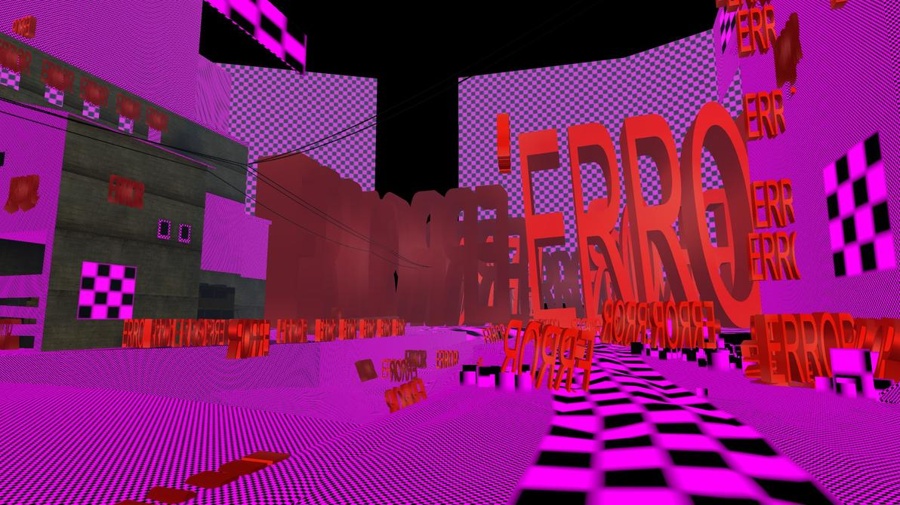

Momentum Mod is the hottest mod on the street right now, if you are into custom Source Engine game modes. This guide will go over the following:
- What is Momentum Mod?
- How do I install it?
- How do I setup and play?
First Things First, What Is It?
Momentum Mod is a standalone client for all your favorite Source game modes like Surf, Trick Surf, Bhop, Rocket Jumping, Climb, and more. While you can play all of these gamemodes on community servers, the ability to play them offline is great. Especically for modes like Surf, Bhop and Rocket Jumping and others where precision is key, reducing all latency is critical to ensure a smooth experience. Plus, having features like local replays, online leaderboard, zone editing tools, and custom HUD are really nice.
Momentum Mod is still in active development. In fact, It has been effectively closed-source since 2021 due to the developers getting an official source engine license! Things have been a little quiet due to this but 1.0.0 is soon to be released and will mark the official public release of the mod, launching on platforms like Steam! The new engine behind Momentum Mod, Strata Source, is a modified branch of the Source Engine contributed by the people from Momentum Mod and Portal 2: Community Edition.
Installation
While the mod is still not officially out, there is a way to get a version up and running locally on your system. Before going closed-source, the devs pushed out one last release of the existing codebase before going “dark” to hold people over until the 1.0 release. This is the version that this guide will show how to setup.
Getting Momentum Mod 0.8.7
The public evaluation build is available on their GitHub Releases: Momentum Mod v0.8.7
There are few caveats with this build as detailed in the release to keep in mind of
- This does not work with our website.
- Runs will not submit or show up on our leaderboards.
- Map selection doesn’t work (and is even hidden in this build).
- Multiplayer (lobbies, SRCDS, etc) does not work.
Download the .zip archive for your platform (Windows or Linux) and extract.
To ensure everything was downloaded and extracted correctly, we will try and run the game.
On Windows
Double-click the run_momentum.bat file!
On Linux
Open a terminal in the extracted directory and run:
1
2
chmod +x ./hl2.sh ./hl2_linux
./hl2.sh -game momentum
The game should launch and show the main menu.
Mounting CS:S and TF2 in Momentum Mod
A lot of surf/bhop/etc. maps depend on assets that are from Counter Strike: Source and Team Fortress 2, similar to the maps in Garry’s Mod (another Source game). If you don’t mount the required game assets, loading a map will likely result in a mess of missing textures and models.  *img source
To “mount” the game assets, all we are doing is telling the game where these assets are located on the local system.
I will show you how to point the game to the local assets of CS:S and TF2 on Windows and Linux.
Make sure that both you own Counter Strike: Source and Team Fortress 2 and have them locally installed on your system.
On Windows
As indicated in the README.txt, adding the absolute(full) paths to the installed local files in momentum/gameinfo.txt should do the trick at least for Windows.
1
2
3
4
5
6
7
8
9
10
game "C:\Program Files (x86)\Steam\steamapps\common\Counter-Strike Source\cstrike\cstrike_pak.vpk"
game "C:\Program Files (x86)\Steam\steamapps\common\Counter-Strike Source\cstrike\download"
game "C:\Program Files (x86)\Steam\steamapps\common\Counter-Strike Source\cstrike"
game "C:\Program Files (x86)\Steam\steamapps\common\Team Fortress 2\tf\tf2_textures.vpk"
game "C:\Program Files (x86)\Steam\steamapps\common\Team Fortress 2\tf\tf2_misc.vpk"
game "C:\Program Files (x86)\Steam\steamapps\common\Team Fortress 2\tf\tf2_sound_misc.vpk"
game "C:\Program Files (x86)\Steam\steamapps\common\Team Fortress 2\tf\tf2_sound_vo_english.vpk"
game "C:\Program Files (x86)\Steam\steamapps\common\Team Fortress 2\tf\download"
Change the file paths to match where they are located on your local drive.
On Linux
If you try adding Linux paths in momentum/gameinfo.txt, it will not work as it only supports Windows paths. So we have to do some shenanigans (yay!).
Earlier, when we lauched the game for the first time, it already made C:\Program Files (x86)\Steam/steamapps/... for us in the parent directory.
However, the created cstrike and tf directories are empty so we will remove these and replace them with a symbolic link to our actual install location for each game, giving it access to the respective game assets.
1
2
3
4
5
6
# CS:S
rm -r C\:/Program\ Files\ \(x86\)/Steam/steamapps/common/Counter-Strike\ source/cstrike
ln -s <steam-install-location>/Counter-Strike\ Source/cstrike C\:/Program\ Files\ \(x86\)/Steam/steamapps/common/Counter-Strike\ source
# TF2
rm -r C\:/Program\ Files\ \(x86\)/Steam/steamapps/common/Team\ Fortress\ 2/tf
ln -s <steam-install-location>/Team\ Fortress\ 2/tf C\:/Program\ Files\ \(x86\)/Steam/steamapps/common/Team\ Fortress\ 2/
Now, to ensure that it is properly mounted, we will launch the game again and type map cs_assualt in the console. This will load the Counter-Strike map ‘assault’. If mounting was successful, you should not see any missing textures or models and it will be all properly rendered!
Adding More Maps
Simply download your desired maps (.bsp) and place in momentum/maps and run map <map_name> in the console to play it!
To get started, here is a collection of surf maps!
Zoning and Closing Notes
You may have noticed that the timer doesn’t start when you start progressing through the map. Thats is because you have to setup zones on the map to configure when the timer should start and stop. This is where it gets out of depth of this guide. I might follow-up with another post all about zoning. In the meantime. you can check out this guide from the Momentum Mod folks! It should be able to get you started with basic zoning.
This does mean you will have to do this for each map, but you only have to do it once. There are some repos out there that might already have zones ready to go like this one. Though I have found that these can be hit or miss. Specifically with surf maps, it is not too terrible since most maps are linear maps (only start and end).